Animated groups · reports · clockwork orbits
How to find a time-symmetric animation
The goal, in one picture#
Two sentences describe that animation completely. The symmetry: turn the picture by 120° about one of its 3₁ centres and you get the same film a third of a period later — and nine such relations hold at once, three that cost no time, three that cost a third of a period and three that cost two thirds. The local rule: two chemicals spread and react by the Brusselator, with a = 1, b = 2.3 and equal diffusion — and nothing in that rule knows anything about the symmetry.
This page is about how you get from those two sentences to the film. The period is not something you choose: it comes out as T = 6.390159918584649, and it is the one extra unknown the time symmetry introduces.
u(g x, t + τgT) = u(x, t) for every symmetry g, every point, every instant.
Each symmetry g carries a fraction of the period, τg. The ones with τ = 0 hold frame by frame. The rest hold only of the movie as a whole, and that is the whole difficulty: a constraint that relates different instants is not a constraint on any single frame, so there is nothing for a step-by-step simulation to enforce.
The method in six steps. Each one is a section of the walkthrough below, done twice: once on three cells, once on the real mesh.
- Write the time offsets down. They form a character — one complex phase per symmetry.
- Check that running the simulation forward cannot work, and see why.
- Draw the seed with a pencil: the one wave the character admits, times the oscillatory eigenvector of a 2 × 2 matrix.
- Solve one equation in one frame and one number, by Newton's method.
- Or: glue the domain to its own past, and simulate after all.
- Ask why step 4 works and step 2 does not. The answer is the same in both sizes.
Two companion reports. A magic theorem for clockwork animations works out what the symbol alone forces before any solver starts — which points must be dark, how much phase must wind around each of them, and an integer identity the time offsets obey in all 68 catalogue entries. It is referenced from section 3 and reads on its own. The making of this site is the timeline: who asked for what, when, and what it cost.
The same problem with six numbers#
The real problem's unknown is 2 592 numbers and a period. Everything about the method, including the part that is surprising, survives shrinking that to six numbers and a period — and at six numbers every claim can be checked by eye. So: the whole recipe on a toy first, then the same six steps on the real mesh.
2.1 · Three cells on a ring
Take three identical Brusselator cells, j = 0, 1, 2, arranged in a ring so each has the other two as neighbours, with the same reaction parameters as the real example — a = 1, b = 2.3 — and diffusive coupling of strength D = 0.02:
u̇j = a − (b+1)uj + uj²vj + D(uj+1 + uj−1 − 2uj), v̇j = b uj − uj²vj + D(vj+1 + vj−1 − 2vj)
The symmetry group is rotation of the ring, cyclic of order 3 — the same order as g227's time symmetry. Give its generator the offset τ = 1/3, and the clockwork constraint reads
qj+1(t + T/3) = qj(t) equivalently q(t + T/3) = S q(t),
where S hands every cell's state to the next cell round the ring. Move one step round the ring = wait a third of a period. Apply it three times and you get q(t + T) = q(t), so T really is the period. That is the whole idea in miniature: a spatial symmetry that costs time.
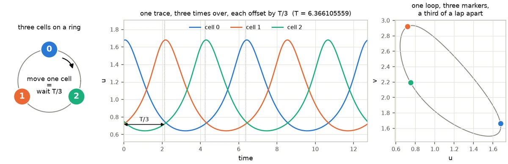
One difference from the real problem, and it makes the toy harder rather than easier: the ring's instantaneous symmetry group — the τ = 0 part — is trivial, so there is nothing at all a step-by-step simulation could impose. On the real mesh a third of the group does act frame by frame, and it is still not enough, as the next step shows in both sizes.
Why that coupling strength. D = 0.02 is chosen, and it is the only quantity on this page that was. The pattern the symmetry asks for is born at b = 1 + a² + 6D = 2.12, because the ring's Laplacian has eigenvalue −3 on it, so the coupling has to be under 0.05 for the pattern to exist at b = 2.3 at all. The choice does not rig the interesting part: for every positive D the in-phase state attracts and the clockwork orbit is a saddle — step 2.6 shows why in one line — so it sets only how far above onset the ring sits, not which route works.
2.2 · Why running the simulation forward does not work
The obvious method: start somewhere, integrate, wait. Do it 5 times from random starts near the uniform equilibrium, for 400 time units — about 62 periods.
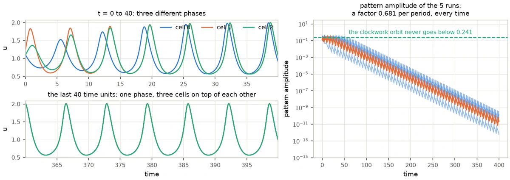
Every run ends in the same place and it is not the answer. The three cells drift into step with each other and end up oscillating in unison — the in-phase state, in which the coupling term vanishes identically and the ring behaves like a single cell. The component of the state on the pattern the symmetry asks for decays by a factor 0.6808 per period, and after 400 time units the largest surviving pattern amplitude across the 5 runs is 1.44e−10. The clockwork orbit never goes below 0.241 anywhere in its period. No run gets within eight decades of it.
That decay factor is not an accident and can be predicted exactly. Because the two species diffuse at the same rate, the coupling term is a multiple of the identity, so a pattern perturbation of the in-phase cycle obeys the same linear equation as a perturbation of a single cell, multiplied by e−3DT. That predicts 0.6800 per period; the measured Floquet multiplier of the in-phase cycle in the pattern direction is 0.6800. The in-phase state is an attractor and the clockwork orbit is not — step 2.6 measures how badly.
2.3 · The seed you can draw with a pencil
Now the construction. Nothing here needs the differential equation solved even once: two small pieces of linear algebra do all of it.
Which pattern the symmetry allows. Look for a solution just above the uniform equilibrium, of the form qj = q* + A Re(zj eiωt e), with one complex number zj per cell. Put that into the constraint. Waiting T/3 multiplies by e2πi/3, the ring shift moves the index, and the two can only agree if
zj−1 = e2πi/3 zj, that is zj = e−2πij/3.
There are exactly three patterns available on a three-cell ring, and that rules out two of them. Averaging a pattern against the character weights — the toy's copy of projecting a plane wave onto the clockwork character — reads 1 on the survivor and exactly 0 on the other two:
| pattern | phases | projection | verdict |
|---|---|---|---|
| all three cells in phase | 1, 1, 1 | 0 (1.66e−16) | cancels |
| one way round the ring | 1, e2πi/3, e4πi/3 | 0 (2.48e−16) | cancels |
| the other way round | 1, e−2πi/3, e−4πi/3 | 1 | survives — the only seed the symmetry allows |
What oscillates, and how fast. Linearise the reaction terms about the uniform equilibrium (a, b/a) = (1, 2.3). That is one 2 × 2 matrix — the same matrix as in the real problem, because the reaction is the same — with eigenvalues 0.15 ± 0.988686i. Its oscillatory eigenvector e says how u and v move together, and its imaginary part gives the period estimate T0 = 2π/ω = 6.3550868, the only guess at the period anyone has to make.
The amplitude. One number is still free. Take the root-mean-square amplitude of the spatially uniform Brusselator limit cycle — a two-variable problem with no ring and no symmetry in it, period 6.4276 — which measures 0.5604, and use that. Newton converges from every seed amplitude in the range 0.20 to 0.70 here, so the rule sits comfortably inside the window rather than balanced on its edge.
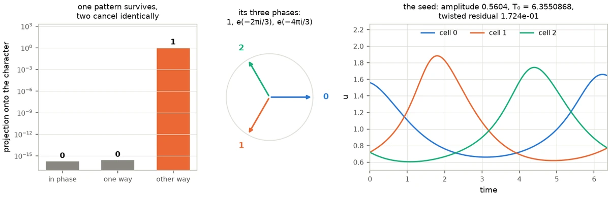
The seed is now completely determined by the group and one 2 × 2 eigenproblem, and its twisted residual — how far it is from solving the problem — is 1.72e−01.
2.4 · Newton on one state and one number
Here is the equation. Take a candidate state q0 and a candidate period T. Integrate for T/3. Rotate the ring back by one cell. Demand that you are exactly where you started:
F(q0, T) := S−1 ΦT/3(q0) − q0 = 0
Φs means "integrate forward by s". A third of a period and not a whole one, because the offset is 1/3: the threefold time symmetry then holds by construction, and the integration is three times cheaper. That is six equations in seven unknowns — the six state values and T — so one more condition is needed, and it is a phase condition: a solution can be slid along itself in time, and the extra equation simply pins where t = 0 is, exactly as a normalisation pins a wavefunction. Seven equations, seven unknowns, Newton's method:
| step | residual (rms) | period reached |
|---|---|---|
| seed | 1.72e−01 | 6.3550867802 |
| 1 | 1.20e−01 | 6.3876941379 |
| 2 | 6.26e−03 | 6.3698172042 |
| 3 | 2.59e−04 | 6.3661931508 |
| 4 | 4.30e−07 | 6.3661050626 |
| 5 | 9.02e−13 | 6.3661055591 |
5 steps, twelve decades, and a period of 6.3661055591 — the same step count the real problem takes. That period is quoted to the precision it has been verified to: halving the time step four times over, from 3.5e−03 down to 4.4e−04, moves it by less than 8e−12. Two checks on the answer, neither of them the equation that was solved: integrating the converged state for a whole period returns it to 2.23e−12, and cell 1 a third of a period later really is cell 0 now, to 1.11e−12. The answer is genuinely the clockwork state and not the synchronised one: its pattern amplitude runs between 0.241 and 0.346 over the period, where any in-phase state reads exactly 0, and the three cells trace one loop a third of a lap from each other.
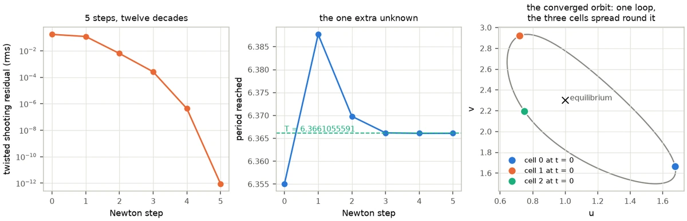
Two things are worth noticing, because they are exactly what changes on the real problem and nothing else does. First, the Jacobian here is 7 × 7, so it can simply be built by finite differences; on the real mesh it is 869 × 869 and is never built at all — it is reached only through directional derivatives, one extra third-of-a-period integration each. That is what Newton–Krylov means, and it is the only difference between the two solvers. Second, nothing in this calculation ever asks whether the solution is stable. F = 0 has no opinion about that, which is precisely why the method works where simulation cannot.
2.5 · Or: simulate one cell that remembers
There is a second route, and it looks like cheating. Read the constraint the other way round: from qj+1(t + T/3) = qj(t),
q1(t) = q0(t − T/3), q2(t) = q0(t − 2T/3).
The neighbours are the cell's own past. So throw two of the three cells away and simulate one, reading its two neighbours out of a history buffer. What was an ordinary differential equation in six variables becomes a delay differential equation in two, and the only new parameter is the delay — which is the period we are trying to find. Start it at the Hopf estimate 6.3550868 and correct it once per period by one Newton step on a phase condition:
δT = ⟨ q(t − T) − q(t), q̇(t) ⟩ / ⟨ q̇(t), q̇(t) ⟩, T ← T + δT
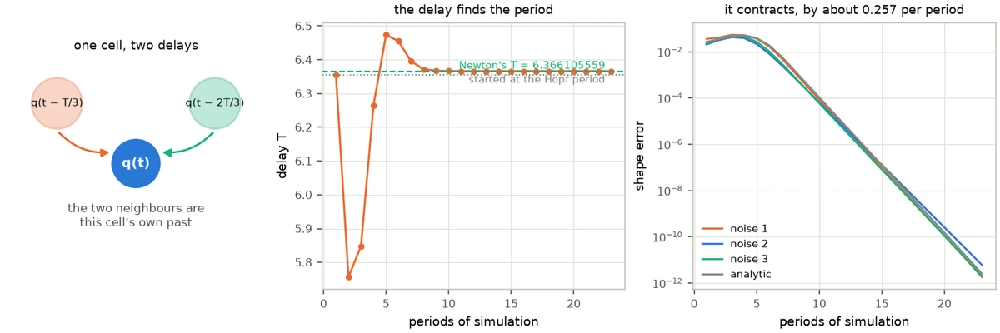
Start from white noise — no amplitude to pick, no pattern to pick, no sign to pick — and after 23 periods it has settled on 6.3661055591, a relative 7.73e−13 from the answer Newton found, with the field agreeing to 2.19e−08 rms. The shape error falls by a factor 0.257 per period — geometrically, like an ordinary attractor, because in this setting it is one. Four different seeds, three of noise and one analytic, land at relative period errors between −3.97e−13 and 8.51e−13, every one of them in 23 periods.
2.6 · Why simulation fails and the delay works
This is the one part of the story that is genuinely about stability, and on the ring it can be computed exactly rather than argued. Linearise about the clockwork orbit and integrate the linearisation once round the period: that gives a 6 × 6 matrix, the monodromy, whose eigenvalues — the Floquet multipliers — say what a small perturbation does per period. Modulus above 1 and it grows; below and it decays. One of them is always exactly 1, because sliding along the orbit is a perturbation that goes nowhere.
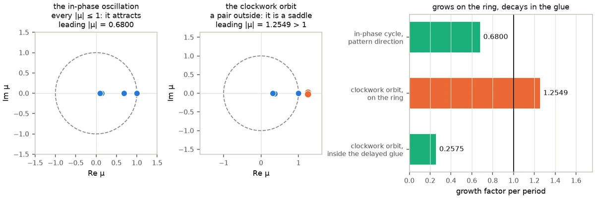
The clockwork orbit is a saddle: leading multiplier 1.2549 per period, so a simulation started near it leaves, no matter how accurate. The delay changes that without touching the orbit at all, because the feedback it amounts to is built out of q(t) − q(t − T) and vanishes identically on the answer. That is Pyragas's construction for stabilising an unstable periodic orbit — except that here the feedback is not added to the equation, it is carried by the neighbours, and the neighbours were going to be read anyway. Deleting the directions that break the clockwork symmetry costs nothing.
2.7 · The six steps, side by side
Every step of the toy is the same step of the real problem with a bigger index set. The table scrolls sideways on a narrow screen.
| step | three cells on a ring | g227 on the triangular mesh |
|---|---|---|
| the group | rotation of the ring, cyclic of order 3 | a wallpaper group, 9 operations on the box, cyclic of order 3 once the τ = 0 part is divided out |
| the character | offsets 0, 1/3, 2/3, one operation each | offsets 0, 1/3, 2/3, three operations each |
| the selection rule | 1 of the 3 ring patterns survives, 2 cancel | 3 of the 6 shortest plane waves survive, 3 cancel; the whole next shell cancels too |
| the seed | the surviving pattern × the 2 × 2 Hopf eigenvector | a three-wave star × the same 2 × 2 Hopf eigenvector |
| the unknown | 6 numbers + T; dense 7 × 7 Jacobian | 868 numbers + T; Jacobian never built, reached by Krylov |
| Newton | 5 steps, residual 9.02e−13 | 5 steps, residual 2.43e−13 |
| the delayed glue | 1 cell, neighbours at t − T/3 and t − 2T/3 | 146 representatives; 430 nodes read at t − T/3, 430 at t − 2T/3 |
| stability | saddle at 1.2549 per period; 0.257 inside the glue | saddle at 1.1608154 per period; 0.692 inside the glue |
Everything in the ring column comes from code/ring/run_all.py, which writes
code/ring/results.json; this page reads its numbers out of that file rather than
quoting them by hand. The one place the toy is not a faithful miniature is the companion
report's theorem: with three cells there is no plane for phase to wind in, so the forced
vortices have no counterpart. Everything else transfers.
The same recipe on the real problem#
3.1 · The constraint, in a simulator's language
A simulator like SymSim draws a wallpaper pattern by integrating a reaction–diffusion equation on one fundamental domain and gluing that domain's edges to copies of itself. Every symmetry of the group is then true of every frame separately. A clockwork group asks for something weaker and much more interesting: the symmetry is allowed to cost time, and the offsets τg record how much. Applying the defining relation to a composition shows that τ is a homomorphism to ℝ/ℤ, so — granted that its image is finite, which is what the catalogue encodes and what a rotation forces — the quotient by the τ = 0 kernel is cyclic. For g227 it is cyclic of order 3. That is the same data as a colour group whose colour permutation is cyclic, with colours replaced by time offsets, which is why every entry appears on the correspondence pages in exactly that form: correspondence-p3.html#g227.
Dividing the plane by g227 gives Conway's 333 orbifold: a turnover, a sphere with three cone points of order three. The clockwork symbol r33₁3₂ decorates those cone points with their offsets — one turn costs nothing, one costs a third of a period, one costs two thirds. That decorated orbifold, plus the choice of equation, is the entire specification.

Shown at its own size here: drag the diagram sideways to read its labels.
What the symbol forces, before any computing. The offsets alone decide that the six screw centres of the picture must be exactly dark, that the phase must wind by −1 about the 3₁ centres and +1 about the 3₂ centres, and that those windings must cancel over a cell — and the reason they can cancel is an integer identity, Σkc/nc ∈ ℤ, which holds in all 68 entries of the catalogue and is the temporal twin of Conway's magic theorem.
That is a separate report: A magic theorem for clockwork animations — five theorems with proofs, three worked examples, and the full table.
Two words, used consistently from here on. The p3 cell is g227's own primitive cell: three threefold centres. The box is the simulation cell on the screen, which has to be three p3 cells, because the field is invariant under the kernel and no more, and the kernel meets the translation lattice in a sublattice of index 3. So the drawn cell — 36 × 36 nodes on a side of 40 — carries nine threefold centres in three classes of three, and nine operations where the orbifold shows three. Two pinned vortices per p3 cell; six on the screen.
3.2 · Why running the simulation forward does not work
Exactly as on the ring, and measured the same way. Take the published orbit itself — the exact answer — perturb it only by the round-off of writing it to single precision, and integrate forward on the g227 torus with the τ = 0 part of the symmetry imposed at every step, which is what a fundamental-domain simulator does. The orbit leaves.
The killer detail is not that the orbit is unstable but which way. The leading unstable eigenvector is itself symmetric under the τ = 0 operations, so confining the simulation to the fundamental domain does not delete the growing direction — it lives inside that domain's own subspace. The simulation ends on the spatially uniform limit cycle: every cell oscillating in unison, no spirals, no screws. That is the ring's in-phase state, in two dimensions.
And as on the ring, there is a reason it must be so. The uniform state loses stability at b = 2; the g227 pattern is not born until bc = 2.065630506987. A branch that bifurcates from an already unstable equilibrium inherits that instability, and the direction it inherits is the spatially uniform one — invariant under every operation of the group, hence inside the kernel. That is exactly the measured leading eigenvector, and exactly the state the simulation ends on. Every published Brusselator record sits above b = 1 + a², where the uniform cycle already exists, and every one of them is a saddle.
One sentence worth keeping: Newton's method works here not because it is cleverer, but because F(q0, T) = 0 never asks whether its solution attracts.
3.3 · The seed, with a pencil
Three steps, none of which touches the partial differential equation. Together they cost 12 evaluations of a two-variable problem, about 0.17 seconds — and with an analytic 2 × 2 Jacobian, none at all. That number is the pedagogy: the group supplies essentially all of the structure.
Read the character off the group. Nine operations act on the box: the three rotations of the p3 point group, each composed with one of the three translation cosets of the p3 lattice inside the box. The rotations contribute nothing to τ; the three cosets contribute 0, 1/3 and 2/3. That split is the character g ↦ e2πiτg, and everything below is the projection onto it, (Pf)(x) = (1/9) Σg e2πiτg f(gx) — the step the ring did with three phases instead of nine.
Test the waves; most of them cancel. Project each plane wave eik·x onto the character. For g227 the translation by (1/3, 2/3) carries τ = 2/3, and the projection survives only when h + 2ℓ ≡ 1 (mod 3) for a wave with reciprocal-lattice indices (h, ℓ). Of the six shortest reciprocal vectors exactly three pass — (1, 0), (0, −1) and (−1, 1) — and (−1, 0) does not. This is the step that is easiest to get wrong by hand: taking the first shell vector without testing gives exactly zero half the time. The whole of the second shell cancels identically, projection norm 2.1e−16.
Shown at its own size here: drag the diagram sideways to read its labels.
Symmetrise. Average the nine character-weighted images of one surviving wave. The result has exactly three Fourier components: three plane waves at 120° to one another, a honeycomb of vortices and antivortices. It satisfies the character law to 7.0e−16, its modulus already has exact zeros at the six screw centres with windings ∓1, and the three τ = 0 centres sit at maxima. Everything the companion report's theorem predicts is already drawn, before a single step of the equation.

Lift through the Hopf eigenvector, and choose the amplitude by the ring's rule. The star is a scalar field and the equation has two species, so multiply by the oscillatory eigenvector e of the 2 × 2 reaction Jacobian — eigenvalues 0.15 ± 0.988686i, the same matrix the ring used — and set q = q* + A Re(ψ e), with T0 = 2π/ω = 6.355088. For A, the uniform-limit-cycle rule gives 0.558 at b = 2.3 and the verified window is 0.30 to 0.60 — a narrower margin than the ring's, and the one real knob in the construction.
3.4 · Newton on one frame and one number
The same equation, with Sg the node permutation of a generator carrying τ = 1/3:
F(q0, T) := Sg ΦT/3(q0) − q0 = 0 plus one phase condition.
The unknowns are the initial frame reduced by the instantaneous kernel — 434 values per species rather than 1296 — plus log T. Note what is not imposed: only the τ = 0 operations ever touch the state, and the τ ≠ 0 relations are never enforced. They are the equation. In the equivariant-dynamics literature these solutions are called relative periodic orbits.
| step | residual | period reached |
|---|---|---|
| seed | 1.90e−01 | 6.355088 |
| 1 | 5.57e−02 | 6.379610 |
| 2 | 5.40e−03 | 6.367806 |
| 3 | 6.01e−04 | 6.389757 |
| 4 | 3.47e−07 | 6.390160 |
| 5 | 2.43e−13 | 6.390159918585 |
| published record | — | 6.390159918584649 |
The period agrees with the published record to a relative 7.5e−14 and the fields to rms 5.05e−08, which is 1.10× the single-precision round-off floor of the stored bytes, 4.64e−08. In other words the two orbits are the same to the accuracy at which the published one is stored. The whole search costs 38 904 right-hand-side evaluations against the original pipeline's 293 095.
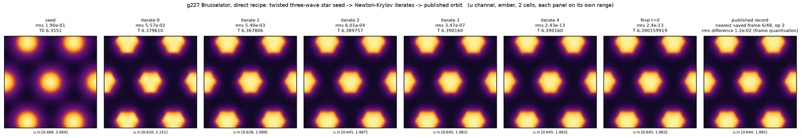
Live demonstration 1 · run the search here
Steps 3.3 and 3.4 on the real mesh, in this browser: the symbol with the winding each centre forces, the shell table in which three projections read 0.00 and three read 0.58, the three-wave seed, the live residual, and a verification table re-checked centre by centre on the orbit the page has just computed. About 1.6 seconds, and nothing is fetched from a stored answer. The panel's amplitude control is the one knob: it runs at 0.5, the predicted 0.558 is also on its menu, and both take 6 steps here — one more than the reference implementation's 5, because the two solvers stop on slightly different criteria. Set it to 0.25 and watch Newton fail honestly.
Loads a self-contained panel of about 70 kB and starts the search. Nothing runs until you press it.
3.5 · A fundamental domain that remembers
The ring's second route, in two dimensions. Read the clockwork convention node-wise, with y = gx:
q(y, t) = q(g−1y, t − τgT)
The neighbour across a glued edge is the domain's own past. For g227 the two non-trivial classes of edge read the domain as it was T/3 and 2T/3 ago — the ring's two delays, on 430 nodes each instead of one cell each. Nothing else changes: the same Laplacian, the same reaction terms, the same time stepper. A simulator that already glues edges needs exactly one new object, a history buffer, plus four-point Lagrange interpolation so the midpoint stages of the stepper can ask for the field between stored samples.
Shown at its own size here: drag the diagram sideways to read its labels.
The direction of the delay is not a convention. Reading from the past reproduces the published record bitwise — maximum error exactly 0.0. Reading from the future is wrong by 1.042 on a field whose whole span is 2.546. It is a one-line test, and it settles the sign of every offset in the catalogue.
Start from white noise on the 146 representatives, with the delay at the Hopf period 6.355088 and the same once-per-period correction the ring used. After 47 periods, 300 time units of ordinary forward integration: relative period error +2.6e−06, field agreeing with the published record to 3.8e−06 relative, and the comparison already reporting the same orbit — before any Newton step at all. Two Newton iterations then give T = 6.390159918584616 and the repository's acceptance audit passes. There is no amplitude to choose, no shell to choose and no sign to choose; four seeds, one picked by an independent verifier, all land within about 1e−06.
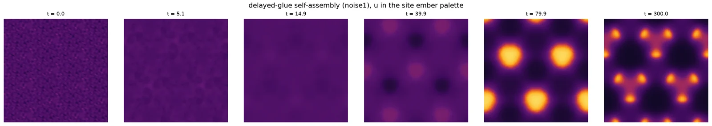
And the reason is the ring's reason: the same perturbation grows by a factor 1.150 per period on the torus and decays by 0.692 per period inside the delayed glue. (The 1.1608154 quoted earlier is the same instability measured properly, by Arnoldi on the monodromy operator; 1.150 is what a finite-time forward run in this discretisation reads.) The delay does not merely shrink the domain by 8.877×; it converts a saddle into an attractor by deleting every direction that breaks the clockwork symmetry. On the ring the same two numbers are 1.2549 and 0.257.
Why it contracts is worth stating carefully, because the tempting sentence claims too much. The delayed system is not the torus system restricted to an invariant subspace: its state is a history segment of length 2T/3, so it is infinite-dimensional and has a spectrum of its own, including modes that live entirely in the history. The contraction factors 0.692 and 0.257 were measured, not proved.
One relation the glue never imposes confirms the companion report's theorem for free. The six screw-centre nodes are asked to repeat after a third of a period, and they obey by barely moving: amplitude 0.0013 against 1.415 at the τ = 0 centres, a factor of about 1100. That is the forced zero at a screw centre, measured rather than assumed.
Live demonstration 2 · watch it assemble
The delayed glue running in this page, on the same 146 representatives: the drawn cell coloured by how each node is fed, the pattern rebuilt through the glue, the delay converging on the published period, and the residual on a logarithmic axis. From white noise to "period found" takes about 13 seconds — the arithmetic itself takes 0.46 seconds, and the rest is deliberate pacing so the assembly is watchable. The in-page run stops at its own tolerance rather than running the full 47 periods: with the first seed it settles after 31 periods at a delay of 6.390172673334256, a relative 2.00e−06 from the published period, and the two Newton steps that follow take it to 6.390159918584547. The other three seeds land between +2.25e−06 and +2.86e−06 in 25 to 32 periods.
Loads the delayed-glue modules and starts on the first seed at normal speed. Seed, speed and the final Newton polish lock while it runs — press Stop to change them and start again. The panel's interim symmetry error, printed before any Newton step, is 5.80e−5; the two Newton steps at the end drive the shooting residual it prints to 3.7e−14, and the symmetry error of the replayed movie to 2.5e−09.
This is the version worth adding to a fundamental-domain simulator. The domain is the one SymSim already builds; the edges are the ones it already glues; the only new object is a ring buffer of past states, and the delay update is two inner products. The honest caveat: this was demonstrated for g227 at 36 and 48 nodes across, with offsets 0, 1/3 and 2/3. Mirrors and glides, where the offsets are 0 and 1/2, change the structure of the glue and are untested — which is the most valuable next experiment this page can name.
Questions people asked#
Is this like solving a stationary Schrödinger equation?
At the orbit's birth, yes — literally, and not by analogy. Linearise the Brusselator about its uniform state. A spatial mode with Laplacian eigenvalue −|k|² is governed by a 2 × 2 matrix J − |k|²D, and it goes Hopf — a pair of eigenvalues crossing the imaginary axis — at
bc(|k|²) = 1 + a² + (Du + Dv)|k|², ωc = √(a² − |k|⁴).
For g227's surviving shell (|k| = 0.18114981 on the mesh; the continuum value 4π/(√3L) is 0.18137994) that gives bc = 2.065630506987, frequency 0.999461434543 and period 6.286571037185. At that value of b the orbit is the eigenfunction of J + D∇² with eigenvalue iωc, restricted to the one character sector the clockwork symbol allows. Measured along a branch of 44 converged points from b − bc = 1.3e−4 up to b = 8.0: the amplitude grows like the square root of the distance from onset, fitted exponent 0.5027 against the predicted 0.5; bc read back from the measured amplitudes agrees to 9.3e−06; and the shape match of the near-onset orbit to the analytic eigenfunction is 1.0000 — of the published orbit at b = 2.3, still 0.9664.
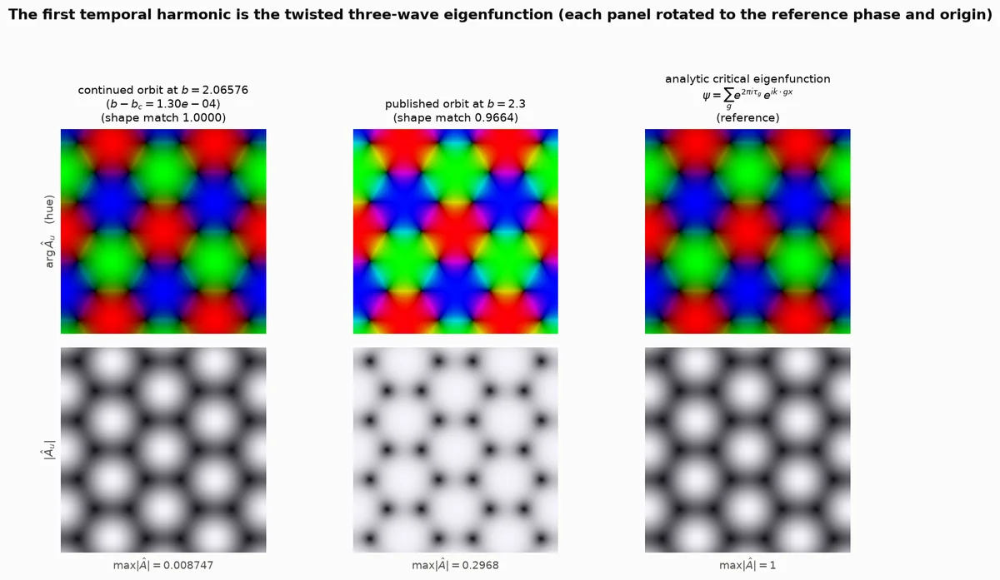
Above onset the eigen-structure does not disappear; it becomes nonlinear. In the shooting formulation the unknowns are a state and a number, and they play exactly the roles of an eigenvector and an eigenvalue: the state is determined only up to the time origin, which the phase condition fixes the way a normalisation ⟨ψ|ψ⟩ = 1 fixes a wavefunction, and the period is the number the equation determines along with it. The solver is the matrix-free machinery one would use on a large sparse eigenproblem. Three honest limits: the operator is not self-adjoint, so the eigenvalues are complex and there is no variational principle to minimise; away from onset the amplitude is not free but fixed by the nonlinearity at ∝ √(b − bc), which is why the seed needs an amplitude at all; and the eigenproblem determines the pattern only at onset, which is the 3 % between 0.9664 and 1.
The equivariant point does the real work, and it is the cleanest statement of what symmetry buys. The uniform mode, |k| = 0, goes unstable first, at b = 2 — before any pattern. But it is not in the twisted sector, so it makes no clockwork; it is exactly the state plain simulation collapsed onto, in both sizes. Symmetry is a selection principle, not a description. One more consequence of equal diffusion is worth making explicit, because it is easy to assume the opposite: there is no Turing instability here at all. The growth rate falls monotonically with |k|, so the equation supplies no length scale; the scale of the picture is set by the lattice and by which shell the character admits, which is also why the shell index behaves as a dial for new orbits rather than as a tuning error.
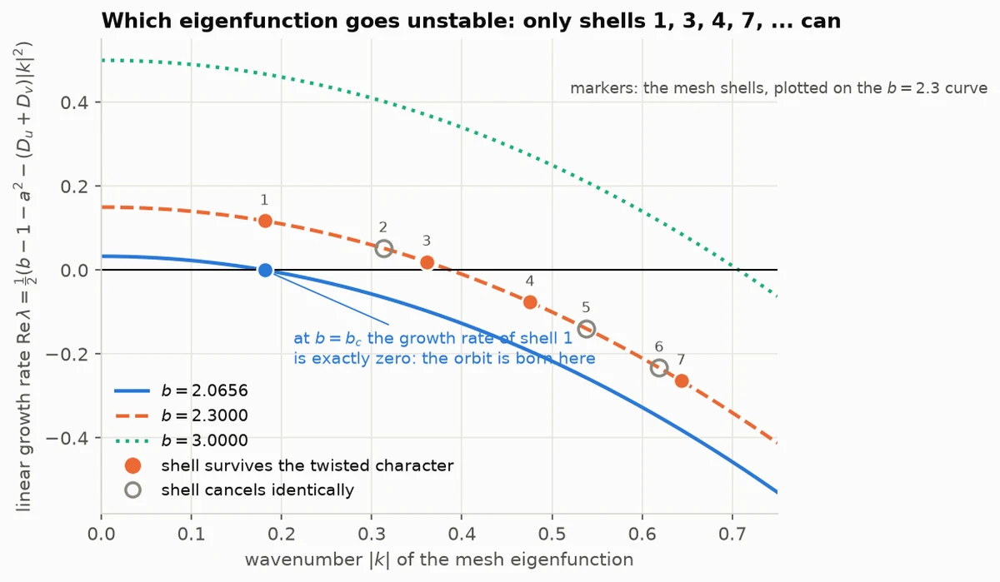
Is there a fifth dimension — are all the frames solved at once?
A precise question, with a different answer for each of the three solvers here.
- The published method has no extra axis. The unknown is one frame and one number. The remaining frames are not unknowns at all; they are produced afterwards by a single forward integration once the frame and the period are known. If you want an extra axis, the only one is Newton's iteration count.
- The delayed glue needs none either. Time runs forward, once, and the glue carries the clock.
- The project's first solver did make the whole movie its unknown, and it failed. Every frame at once plus the period, frames tied together by a trapezoidal defect, the space–time symmetry imposed as a hard constraint, and the whole block slid downhill by a quasi-Newton descent. It never produced an accepted orbit, for two separate reasons: a trapezoidal defect on M frames is only second-order accurate, so a perfectly converged trapezoidal solution still fails an independent fourth-order replay by 1.53e−03 against a gate of 1e−05; and least squares on a bare space–time residual has a trivial minimum, the uniform state, which a descent method walks into — the iterate ends at 0.0038 % of the published amplitude.
And yet the idea is right, which is the interesting part. Solving all the frames at once works well provided time is represented spectrally and the loop is moved by Newton rather than by descent: harmonic balance reaches an orbit in 16 992 field evaluations, about 2.3× under a correctly seeded shooting run. It converges to a different orbit, T = 6.351384224091878 — the same unpublished second-shell orbit the pencil construction reaches from the other direction. But the descent route, taken literally, produced zero admissible orbits for about 1e6 evaluations, and that is the honest headline.
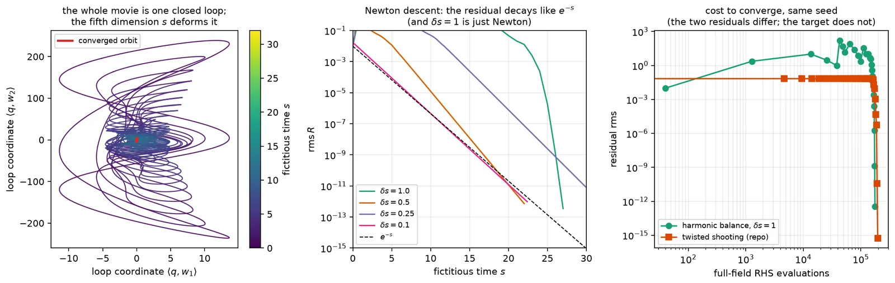
How it was actually done, and what changed#
None of the above is how the published animation was found. The real pipeline ran on 7 September 2026 as one job in one batch of 204, and it had four stages: solve for the uniform equilibrium; build a complex Ginzburg–Landau problem on the same mesh — near the Hopf point the Brusselator reduces to it — integrate it from seeded random noise inside the character subspace for 600 time units and polish the result to a rotating wave, trying both signs of the frequency and keeping the first whose audit passes; lift that complex profile through the same 2 × 2 Hopf eigenvector at amplitude 0.25 or 0.50; then Newton–Krylov on the same twisted shooting equation, followed by replay, audit and a second solve at a finer mesh.
It cost 53.750973 seconds of function time on a two-core container — about $0.0023 as this orbit's share of a $0.200731 processor batch. No graphics processor was used on this path at all. The original was neither slow nor expensive. What the newer routes remove is the random seed, the Ginzburg–Landau stage and the infrastructure: the seed becomes deterministic and drawable by hand, the search costs 7.53× fewer evaluations, it runs in a browser tab in about 1.6 seconds — or, with the delayed glue, there is no Newton solve to run at all.
The same orbit, found five ways. Costs in full-field right-hand-side evaluations, the only currency that survives a shared machine. The table scrolls sideways on a narrow screen.
| route | evaluations | Newton steps | period reached | same orbit? | wall |
|---|---|---|---|---|---|
| original pipeline, Ginzburg–Landau seed | 293 095 | 43 | 6.390159918584649 | it is the record | 53.75 s |
| direct construction: symbol → star → Hopf lift → Newton | 38 904 | 5 | 6.390159918585126 | yes, rms 5.05e−08 | 10.1 s |
| the same algorithm in a browser | 41 028 | 6 | 6.390159918584618 | yes, 6.9e−08 after a 0.211-frame shift | 1.59 s |
| delayed glue from white noise, then 2 Newton steps | 88 967 | 2 | 6.390159918584616 | yes, rms 5.36e−08 | ≈ 99 s |
| delayed glue, 4-period warm start | 51 564 | 5 | 6.390159918584609 | yes | — |
| continuation from onset, 44 branch points | 438 326 | 3–6 each | passes through it | yes, 1.20e−08 | 1 421 s |
Like for like — orbit-finding only, direct construction against the original pipeline — that is 7.53× fewer right-hand-side evaluations, 7.53× fewer time steps, 5.34× fewer trajectory integrations and 7.54× fewer grid-point evaluations. The tempting comparison — 1.6 seconds in a page against 53.75 seconds of container time, a factor of 33.8 — is not a fair one, and is quoted here only to be disowned: that job also produced a 96-frame movie, two audits and a finer-mesh refinement, on a different machine. Evaluations are the only currency that survives a change of hardware, which is why every cost on this page is quoted in them.
Further details#
Footnotes to the walkthrough: the knobs, the failures, the reach of the method across the catalogue, and how to run any of it yourself.
The one knob, the chirality, and the shell dial
Everything in the construction is fixed by the group except the seed amplitude A. On the real problem the verified window at b = 2.3 is 0.30 to 0.60: at 0.30 Newton converges in 35 iterations, at 0.25 it still stalls after 150, and at 0.80 after 60. The uniform-limit-cycle rule gives 0.558 and works at every b tested — 7 iterations at b = 2.1, 5 at 2.3, 5 at 2.5. Honestly stated: 0.558 lands mid-window by construction plus luck, not by a proof that it must. On the ring the window is wider, 0.20 to 0.70, and the same rule reads 0.5604.
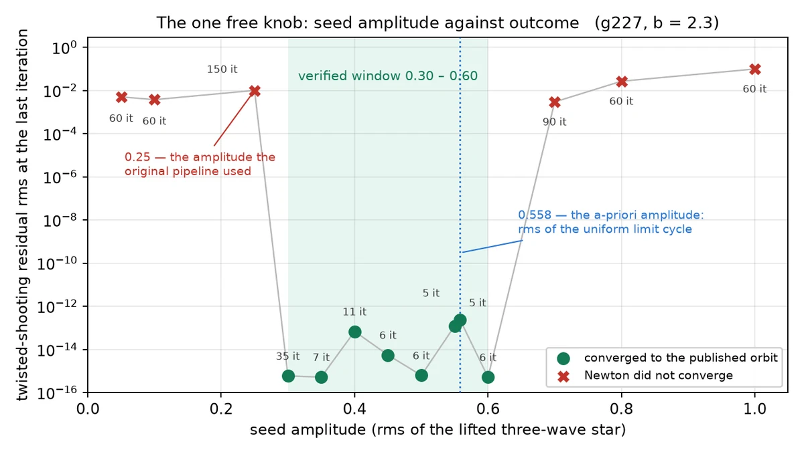
Chirality is the sign of the character. Building the star with e−2πiτ instead of e+2πiτ produces the mirror image of the star, to 5.1e−16, and lands in the conjugate character sector: every vortex charge flips, and the resulting orbit fails against the catalogue's generator (residual 0.662) while satisfying the inverse generator to 4.7e−08. The ring shows the same thing with no geometry at all: seeding the forbidden ring pattern leaves a twisted residual of 8.99e−01 against the generator and 1.72e−01 against its inverse. The honest limit: that the wrong sign can never be rescued is an inference from the runs, not a proof — the Newton unknowns are kernel-projected only, so the conjugate sector is not an invariant subspace of the iteration.
The shell index is a dial for new orbits. Seeding from the next allowed shell converges in 8 iterations to T = 6.3513842322 — not the published orbit (relative rms 0.171) but a genuine, audit-passing g227 clockwork orbit with 24 cores in the box instead of 6, as the exactly doubled wavevector demands, total charge still 0, all nine centre charges as predicted. An entirely independent harmonic-balance solver found the same unpublished orbit at 6.351384224091878 — agreement to eight digits.
Stability numbers, and what "saddle" is measured with
A Floquet multiplier is an eigenvalue of the monodromy: linearise about the orbit, integrate the linearisation once round the period, and read the eigenvalues of the resulting map. On the ring that map is 6 × 6 and can be formed by finite differences, which is what the figure in step 2.6 plots. On the real problem it is 2592 × 2592 and only its leading eigenvalues are computed, by Arnoldi.
- Ring, clockwork orbit: multipliers of modulus 1.2549, 1.2549, 1.0000, 0.3706, 0.3706, 0.3152 — one exactly 1, the time translation; a leading pair at 1.2549 outside the unit circle; the rest inside.
- Ring, in-phase cycle: 1.0000, 0.6800, 0.6800, 0.1398, 0.0950, 0.0950 — everything inside, so it attracts.
- g227 published orbit: leading multiplier 1.1608154 per period, with independent re-measurement agreeing to 5.9e−08 relative.
- All 51 published Brusselator records are saddles, multipliers 1.0395–2.1721, with the unstable direction inside the kernel-symmetric subspace. Two honest denominators: those 51 records are only 25 distinct fields, and for 16 of them the τ = 0 kernel is trivial, so the symmetry half of the statement is vacuous there — it has content for 35 records covering 20 fields.
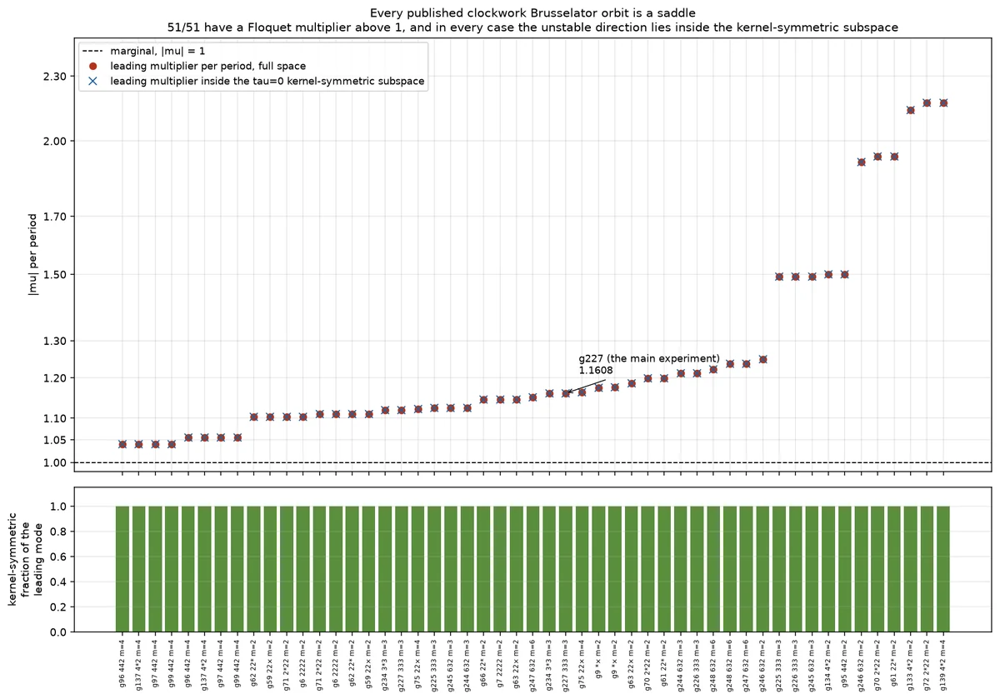
How far the deterministic recipe reaches across the catalogue, and where it trips
Run the same construction across the whole catalogue, with no noise and no random numbers. It is admitted for 29 of the 51 entries with a nonzero offset, for 8 702 seconds of ordinary processor time and $0, against a strictly harder gate than the repository's own 204-job batch, which scored the same 29 for 9 309 core-seconds and $0.200731. Not the same 29: twenty-five overlap, four go each way, and 18 entries — mostly mirror groups — are found by neither. Three deductions belong in the same breath, because each shrinks the claim: the 29 are only 16 distinct orbits; the literal recipe reaches 15, the rest needing a best-of-five adaptive procedure, so the knob count went up where the method was advertised as knob-free; and all 29 clear the phase gate only after the site's export projection, raw single precision scoring 2.384e−07 against a limit of 2e−07.
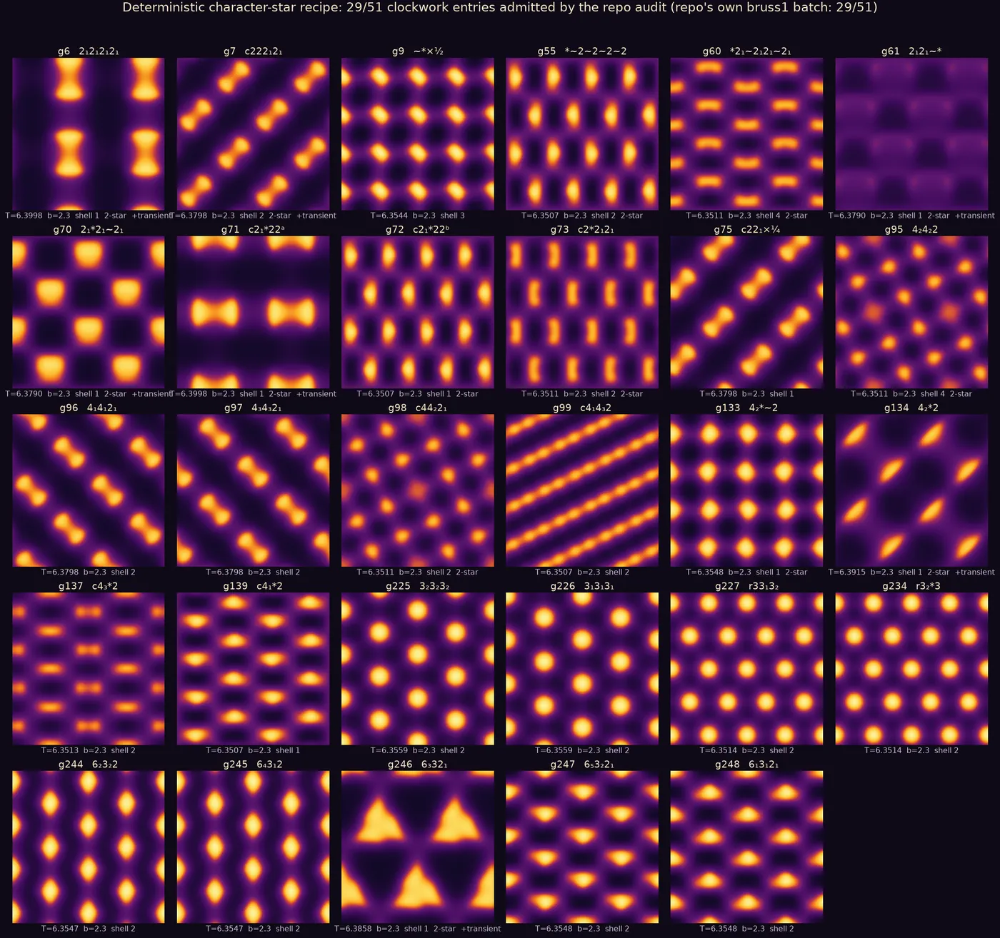
The most instructive number in that sweep is a rejection statistic. Of 302 attempts, 100 solved the shooting equation to 1e−8 or better and the audit rejected 71 of those — 68 by one gate, the contrast floor. The deterministic seed's default failure is the standing-wave branch: a perfectly valid solution of the equation whose pattern nearly coincides with its own half-period image, so the picture briefly goes blank and there is nothing to watch. Solving the equation and getting an animation worth watching are different achievements. The fix is a quadrature seed, ψ = e1 + i e2 from two independent stars of the same character; 14 of the 29 needed it, and it was found by trial.
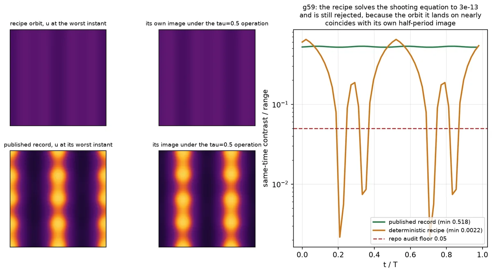
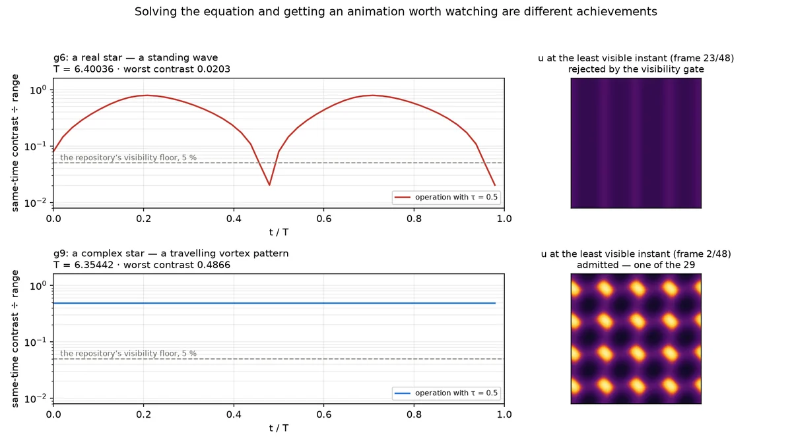
Honest failures, in one list
- Forward simulation cannot hold these orbits — not from the exact published state, and not on the fundamental domain either.
- The deterministic seed's default failure mode solves the equation and produces an invisible animation: 68 of 71 rejections.
- Gradient descent on a bare space–time functional collapses towards the uniform state; with the nontriviality barrier the original browser solver actually carried, it stalls at 9.8 % of the right amplitude instead of blanking the screen.
- The direct recipe's real edge is resolution, not symmetry. At b = 3.0 Newton converges to residual 1.4e−15 with every winding correct, and the orbit still fails the site's audit at 1.76e−06 against the 2e−07 limit, because 36 nodes across no longer resolve it.
- Eighteen of 51 entries are found by neither route. The companion report's theorem says where they are — every entry missing a record is forced to carry a nodal line or a core of winding at least 2 in absolute value — but that is a necessary condition with uncorrected significance levels, not a cause.
- Three patterns run through the experiments themselves, and they are why several numbers here are corrections of earlier ones: truncated budgets reported as failures invented sharp thresholds that do not exist; every speed-up figure initially had a numerator and a denominator measuring different work; and denominators of generality went uncontrolled — 51 records are 25 fields, 29 entries are 16 orbits.
- An instructive early mistake, three days before the successful job: the live browser simulation enforced only the zero-offset spatial subgroup and then drew the requested time-shift generators over the result. For an entry whose instantaneous kernel is trivial the fluid was then the same whichever clockwork symbol was selected, and only the decoration changed. It was noticed within the hour and removed the same afternoon. A time-shift character is not a constraint on a state, and it cannot be imposed step by step.
The first thing a sceptic should attack, answered in advance: no symmetry is smuggled in anywhere. Only the τ = 0 kernel is ever projected onto a state; every τ ≠ 0 relation is an output. That was checked twice independently — the repository's own unprojected twisted residual on the browser's state reads 7.2e−16, and a double-precision movie from the delayed glue satisfies all nine space–time relations at 1.09e−09 with no projection applied. On the ring the τ = 0 kernel is trivial, so there is nothing to project and the point is moot by construction.
What is still open
- Is the amplitude rule a theorem or a coincidence? The uniform limit-cycle amplitude lands inside the verified window at every b tested, and nothing here proves it must. A normal-form estimate of the basin would settle it.
- Can the wrong-chirality claim be proved? Empirically the conjugate sign never reaches the catalogue generator's orbit, but the Newton unknowns are kernel-projected only, so nothing structurally forbids the iterates from leaving the sector.
- Why do 18 of 51 entries resist both routes? The theorem gives an exceptionless necessary condition and no cause. Its significance levels are uncorrected for having chosen the predicate after seeing which one worked, and one predicate with no theorem content at all scores nearly as well. The decisive experiment — run the solver on the missing entries and diagnose each failure — has not been done.
- Does the standing-wave trap have a principled fix? Is there a criterion that says in advance when the character star is real times a global phase, so the quadrature seed is mandatory rather than a fallback?
- Does the delayed glue generalise past order three? Mirrors and glides change the glue's structure, and the 18 entries neither route finds are mostly mirror groups. This is the most valuable next experiment on the list, and the most easily done.
- Is the 8.877× domain reduction real at scale? It is arithmetically exact and bitwise verified, but at 36 nodes across the array overhead eats it. It is a promise about larger meshes, untested there.
- What is the shell dial's reach? The second surviving shell produced a genuine unpublished 24-vortex orbit, confirmed independently by a second method. How many admissible orbits does each entry have, and does the shell index enumerate them?
Reproduce it
Everything on this page is in code/ next to it, with a
README that explains what each script does and what to expect.
code/ring/— the three-cell walkthrough, self-contained.ring.pyis the toy laboratory;run_all.pycomputes every number in section 2, draws its five figures and writesresults.json, which this page reads at build time. NumPy and SciPy only; about twelve minutes, or two with--quick.code/lab.py— the shared laboratory for the real problem: loads a catalogue entry, builds the character, the reciprocal shells and the three-wave star, lifts through the Hopf eigenvector, runs Newton–Krylov on the twisted shooting equation, compares orbits and runs the acceptance audit.code/direct.py— the deterministic construction of section 3, end to end, in one command.code/dde.py— the delayed glue: the fundamental domain, the history buffer, the four-point Lagrange interpolation, the delay update.code/reduced.py— the reduced right-hand side on the 146 representatives and the expander back to the full cell.
The scripts for the real problem deliberately do not re-implement the equations. They import
the repository's own numerics through
docs/scott-gray/research/equations/rdlab.py — its Laplacians, its Brusselator,
its time stepper, its residual, its audit — because the point was to measure the published
pipeline rather than a lookalike of it. Point them at a checkout with the AGF_REPO
environment variable, or leave them where they are published and they find it by walking up
the tree. Python 3.10 or later; no graphics processor, and no cost.
The two live demonstrations are equally readable: live/newton/ is the search in
about 70 kB over the wire, and live/glue/ is the delayed glue, whose
reduced right-hand side is checked against the full-torus one on every load and agrees
bitwise. Each folder has its own README with the verified numbers.
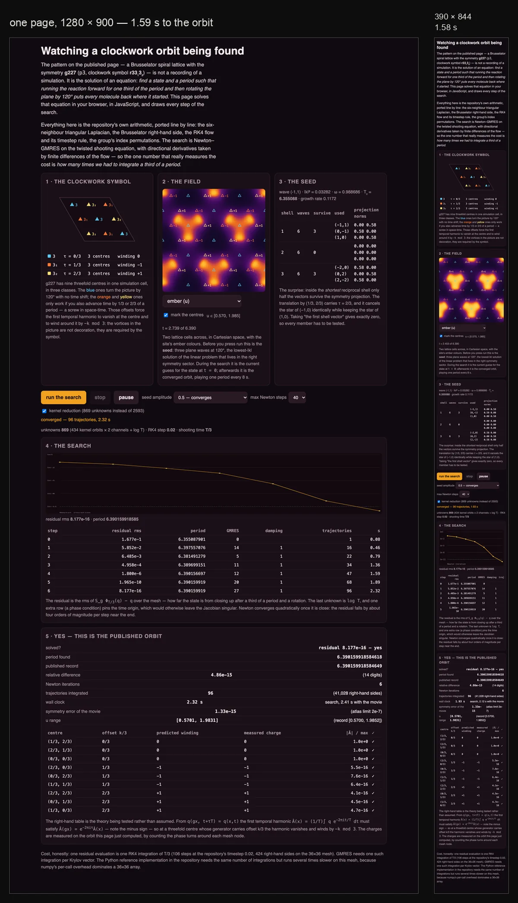
Where this sits
- J. H. Conway, H. Burgiel, C. Goodman-Strauss, The Symmetries of Things, A K Peters, 2008 — the Magic Theorem and the orbifold signatures, and the notation the clockwork symbols decorate.
- M. Golubitsky, I. Stewart, The Symmetry Perspective, Birkhäuser, 2002 — the H/K classification of spatio-temporal symmetries of periodic solutions. A clockwork group is exactly such a pair, with H/K cyclic by construction.
- M. Golubitsky, I. Stewart, D. G. Schaeffer, Singularities and Groups in Bifurcation Theory, Volume II, Springer, 1988 — the equivariant Hopf theorem, whose twisted subgroups are precisely the data (G, τ).
- K. Pyragas, "Continuous control of chaos by self-controlling feedback", Physics Letters A 170 (1992) 421–428 — feedback built from q(t) − q(t − T), which vanishes on the target orbit and therefore changes its stability without changing the orbit. The delayed glue is that construction carried by the boundary conditions instead of by an added term.
- J. Masajada, B. Dubik, "Optical vortex generation by three plane wave interference", Optics Communications 198 (2001) 21–27 — three plane waves at 120° produce a honeycomb vortex–antivortex lattice. That is the seed of step 3.3, reached from the interference geometry rather than from the symmetry.
- The five theorems, their proofs and the full 68-entry table are in the companion report, A magic theorem for clockwork animations.
Where to go next
- A magic theorem for clockwork animations — what the symbol forces before any solver starts: forced zeros, forced windings, an index budget, and the integer identity that makes the two compatible.
- The making of this site — the seven-week timeline, who asked for what and when, and what it all cost.
- The g227 Brusselator entry in the showcase — this orbit as the site plays it, with the other patterns of the same group beside it.
- correspondence-p3.html#g227 — the catalogue entry: orbifold 333, clockwork symbol r33₁3₂, the colour group it corresponds to.
- The published animation, full screen, and its monochrome twin.
- SymSim — the fundamental-domain reaction–diffusion simulator step 3.5 is written for.
Every number on this page is the verified one. The ring's numbers are read at build time out
of code/ring/results.json; the rest come from the experiments behind this report,
and where an experiment's own headline and its independent check disagreed, the check won and
the correction is stated in place rather than quietly applied.